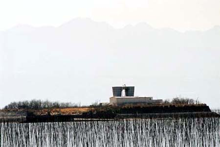
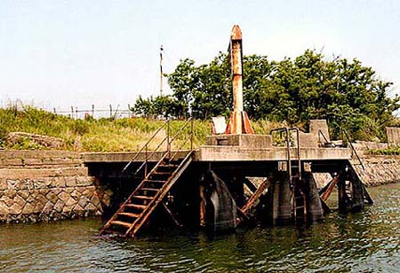
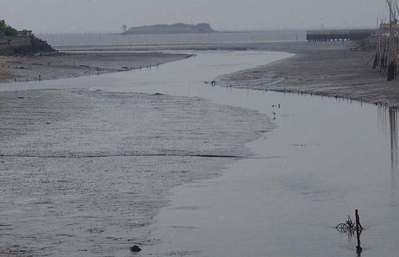

初島通気坑
福岡県大牟田市
大牟田市の沖合２キロの有明海に浮かぶ第1人工島・初島。海底炭鉱である三池鉱(旧有明鉱) に通気坑を設置する必要性から建設され、昭和26年8月完成した。その後同29年7月通気専用の竪坑が完成。島の直径約134ｍ の小さな島である。

(2000年3月25日撮影)

初島の着岸場。通気坑等はすでに撤去されていた。(2004年5月22日伊藤さん撮影)

諏訪川に架かるガタガタ橋から初島を撮る(2004年8月1日撮影)
BACK